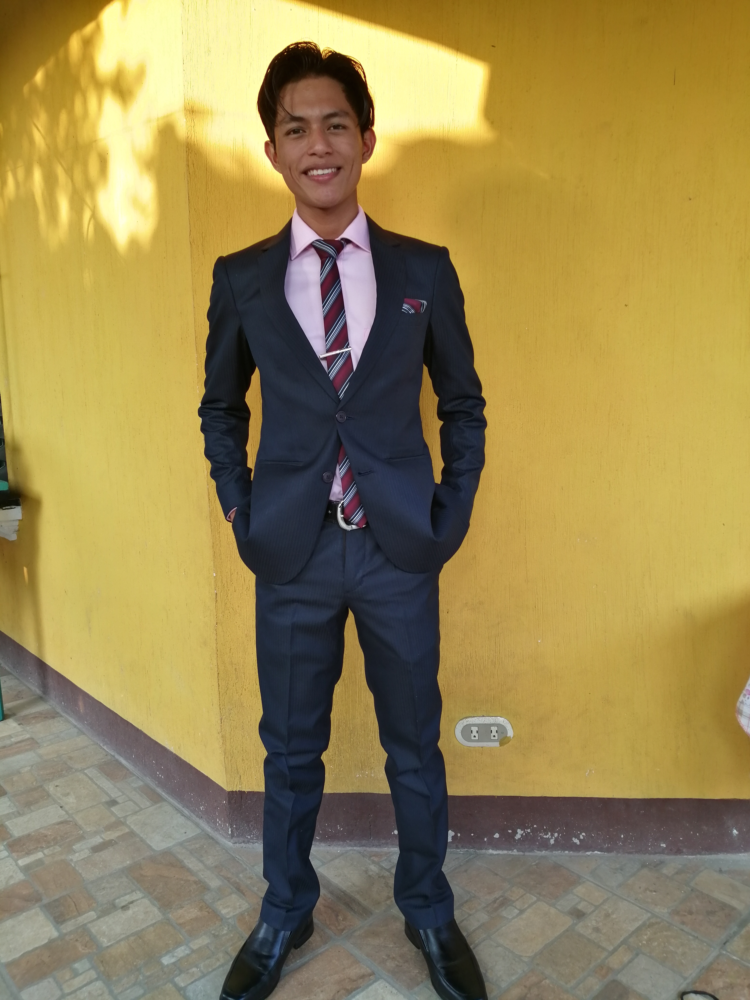

Bienvenido , Soy Job Gabriel Jose Chaclan Velasquez
Nacido en Mazatenango Suchitepequez, Guatemala, resido en San Antonio Suchitepéquez, actualmente aprendo desarrollo web, comence mi carrera como desarrrollador en el año 2020. Soy estudiante en el Colegio Científico y Tecnológico “Blaise Pascal”, Curso ultimo año del Bachillerato en computación con diplimado en Desarrollo de aplicaciones, mis hoobies son leer, escuchar musica, jugar futbol, ver y crear videos, la fotografia y jugar videojuegos.